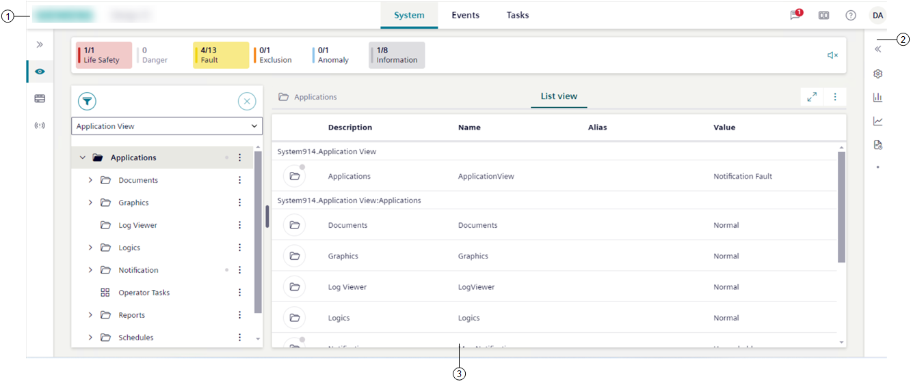

Flex Client Application Screen
In Flex Client web/desktop app, the screen displays many functional components in multiple panes, divided by splitters.

1 | Top Bar | The horizontal navigation bar is the point of entry to a set of Flex Client additional features. |
2 | Right panel | By default, it is collapsed on the right, and displays the following:
|
3 | Work area | Large area below the horizontal navigation bar which displays:
|
Interacting with the Flex Client web/desktop app
You can interact with the different system functions in a variety of ways. For more details, see:
- Reduce or Expand Summary Bar Height
- Adjust Layout
- Change Theme and Text Representation
- Switch to Full-screen Mode
- Work With Multiple Flex Windows
For user settings and additional preferences, see also:
- Change Your Password
- Change Your User Roles
- Set Your Favorite Flex Client Homepage
- Personalize Notifications
For other user tasks, see also:
Navigating the system
You can navigate the system in many ways. These include:
- Doing a primary selection action:
- Select an object in the System tree to propagate its information to the pane on the right.
- Doing a secondary selection action for an object selected in the System tree:
- Select an item in the Primary pane to display any relevant properties and commands in the right panel.
- Doing a send to primary action or send to secondary action:
- Select next to an object (or group of objects) in System Browser, and respectively choose whether to propagate (send) its information to the primary pane on the right or to a secondary pane that will open next to the primary.
- Navigating back () and forth () through the desktop app or web app navigation history. In the web browser app, you can also save bookmarks to individual pages of the Flex Client application.
NOTE: Bookmarks created with a previous version of the Flex Client application will not work because of a different URL structure.
Browser window size
In Flex Client web app, if you resize the browser window to 576 pixels the web app switches to mobile view (see Mobile Flex).
Below 360 pixels, the screen is grayed out, the Flex Client application cannot be used, and a message suggests to increase the display width.
Advanced functionalities
By selecting on top left of the Flex desktop app window, advanced users can also access a few advanced functionalities (such as, security settings, hard refresh, and editing display rules for graphics), which are described in the Desigo CC engineering help.